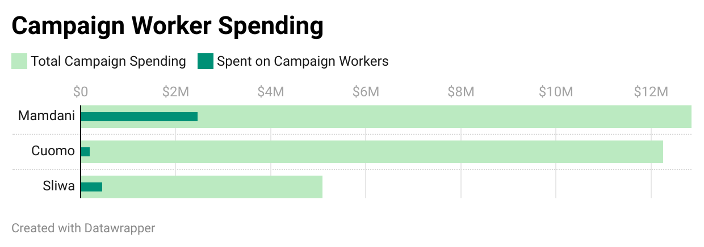

The recent New York City mayoral election was defined not just by its outcome but by the paths each candidate took to reach their target audiences and voters.
An analysis of the New York City Campaign Finance Board (NYCCFB) expenditure data reveals major differences in campaign strategy among candidates, particularly between Mamdani and Cuomo, and overall investment in campaign workers.
An analysis of the New York City Campaign Finance Board (NYCCFB) expenditure data reveals major differences in campaign strategy among candidates, particularly between Mamdani and Cuomo, and overall investment in campaign workers.
Mamdani devoted approximately 20% of his total spending to campaign workers, where Cuomo, on the other hand, put only 1.5 % of his budget—roughly $190,000.
This spending gap is crucial. It suggests that Mamdani’s campaign relied on a grassroots network, whereas Cuomo prioritized other centralized expenses over on-the-ground staff.
The breakdown of Cuomo’s expenditures further highlights this difference in priorities. About $2 million of his spending was categorized as “other expenses” per NYCCFB data, which included roughly $530,000 in digital buy and about $280,000 on live calls and canvassing. This shows Cuomo’s preference for digital outreach and mass advertising over paying a staff of organizers.
For comparison, Sliwa, who had the lowest total spending of the three, still allocated about $450,000 to campaign workers. This is significantly more than Cuomo did, despite Sliwa having fewer resources, indicating another strategy priority in overall campaign spending.
Political analysts have noted the effectiveness of Mamdani’s spending priorities. David Smith, The Guardian’s D.C. bureau chief, wrote that Democrats' ground game, built on this grassroots approach, resulted in a successful campaign.
“Mamdani was a shoe-leather candidate who put himself all over the city, talked to countless voters, projected optimism without sounding preachy, and had thousands of volunteers knocking on doors multiple times,” said Smith.
Cuomo’s campaign benefited immensely from wealthy, outside support, with the Super PAC Fix The City—backed by billionaires, including Michael Bloomberg—pouring money into Cuomo's ad campaign.
According to findings from Politico, the super PAC supporting Cuomo spent more than $14.8 million on TV ads—including $5.4 million just for anti-Mamdani messaging—separate from Cuomo’s own campaign expenditures.